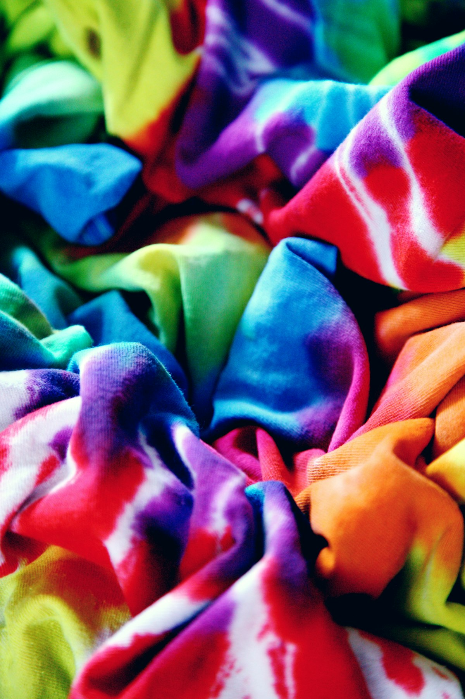

Girish Patel
ProprietorLeads the company and works directly with buyers on pricing, samples and supply.
Proprietor-led, factory-direct and focused on dependable supply for industrial colour buyers.
In the summer of 2000, we fired up our very first reactor kettle in a modest shed here in Phase-II, Vatva GIDC. Back then, color chemistry was highly personal and hands-on. I spent my days standing by the washing basins, hand-matching color coordinates for local cotton and silk printers who needed reliability.
Over the last 25 years, our operations have scaled and our laboratories have modernized with digital spectrophotometers. However, the human craftsmanship behind the chemistry remains unchanged. We don't just ship bulk chemicals; we design solutions that ensure your textile fibers and copy paper shades look absolutely perfect, batch after batch.
Thank you for trusting us with your color needs. We welcome you to collaborate with our lab technicians for custom formulations.

Ahmedabad, GujaratDarshan Dye-Chem is a manufacturer, wholesaler and retailer of dyes based in Ahmedabad, Gujarat, one of India's leading textile and chemical hubs.
Led by Girish Patel, we supply acid dyes, direct dyes and specialty colourants and have served buyers through IndiaMART for over a decade.
Dependable quality and on-time dispatch so your production never waits on colour.
Shade-to-shade repeatability is the first thing dye buyers ask about, and the first thing we protect.
Quick quotes, samples on request and supply to buyers across India and overseas.
Registered business details as listed on our IndiaMART profile.
A quarter of a century of making colour, one batch and one customer at a time.
The first reactor kettle is fired up in a modest shed in Vatva GIDC, Ahmedabad, with a simple promise: dependable dyes and honest advice.
We list our range on IndiaMART and begin serving buyers beyond our local market.
The business is formally registered under GST, strengthening trust with wholesale and corporate buyers.
Acid dyes, direct dyes and specialty colourants, supplied wholesale and in bulk across India.
Our goal is to take Darshan Dye-Chem to more overseas buyers in the years ahead.
The people behind every order, from the first enquiry to the final dispatch.
Leads the company and works directly with buyers on pricing, samples and supply.
Runs batches and checks shade consistency before material leaves the factory.
Handles quotations, samples and enquiries from India and overseas.
Packs and ships orders so they reach you on time and in good condition.
Darshan Dye-Chem is a manufacturer, and also supplies wholesale and retail. We are based in Ahmedabad, Gujarat.
Yes, please request a sample through the contact page with your required dye and shade, and our team will confirm the details.
Yes, export enquiries are welcome. Share your product, quantity and destination country and we will respond with options.
Acid dyes are commonly used for wool, silk, nylon and leather, and direct dyes for cotton, other cellulosic fibres and paper. Try our dye finder or ask our team.
Send us your shade reference and requirement and we will advise what is possible.
Contact us with the products you are interested in and we will share pricing and available technical information.
Share the shade, quantity and destination. We will come back with pricing and sample options.
Request a quote